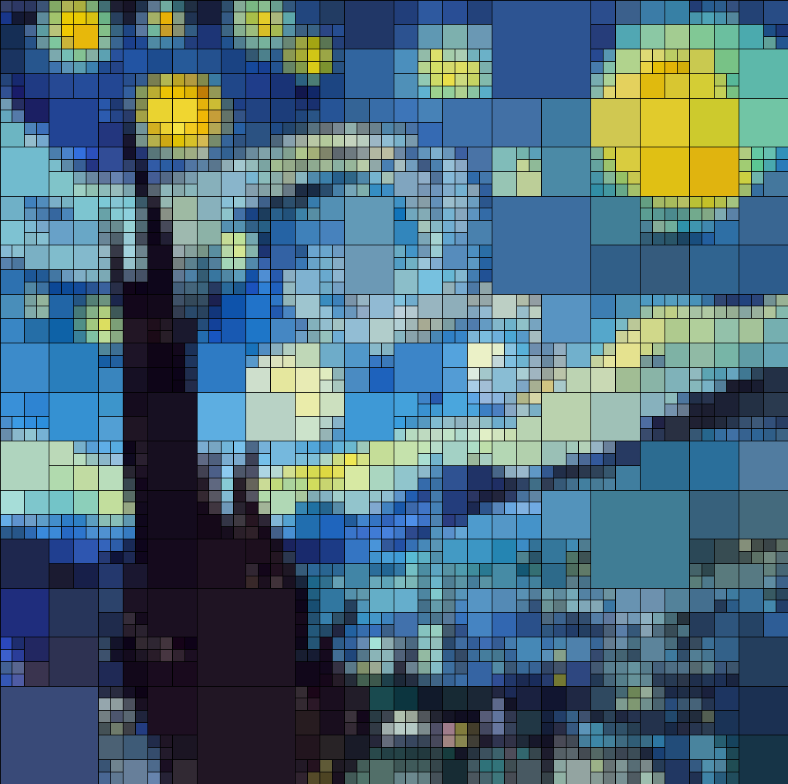
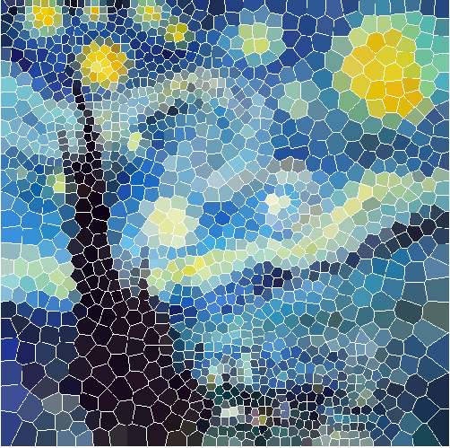

Stained Glass Filter
Eclipse / Java / Algorithm / Github
GitHub Repo
Left Image: Quad Tree Filter | Right Image: Stained Glass Filter


About
This project is a Stained Glass filter application that is used to
break any image down into a number of tiles (or cells), similar to
that of stained glass windows in an old church. We implemented Quad
Tree filter and combine it with Voronoi Diagram to provide different
outputs; With the former, the image is broken down into a series of
uniformly-coloured quads using a recursive function to build quad
tree. In the latter, the image is broken down into a series of
uniformly-coloured polygons. Each of these tiles have borders that
further distinguish one from another.
My Contribution
- Research on the algorithmns could help to achieve the effect
- Wrote functions to create the Voronoi Diagram
-
Implemented voronoi points throughout the image to generate the voronoi cells
-
Implemented functions to create Quadtree diagram
-
Applied the Lloyd algorithm in order to refine the shape of each of
the cells
-
Implement a GUI for users to select filters and adjust the
size of cells or number of iteratioins